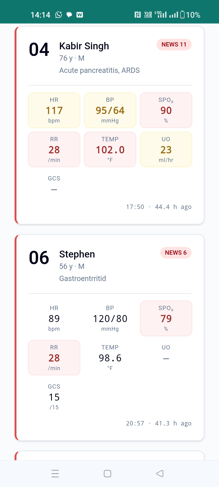
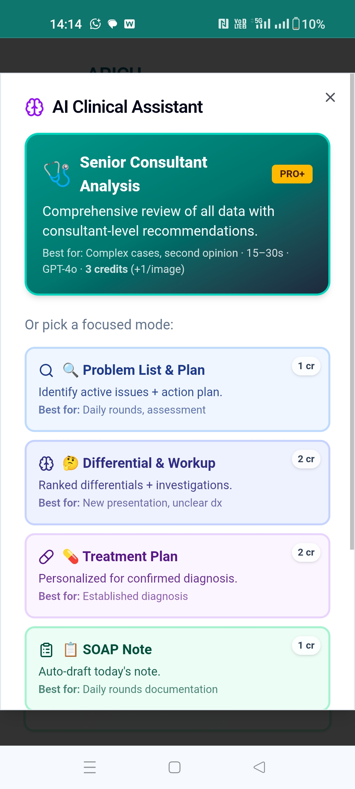
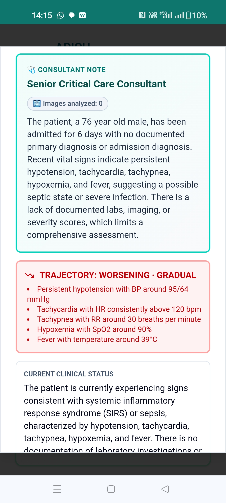
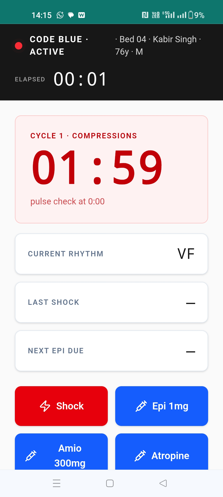
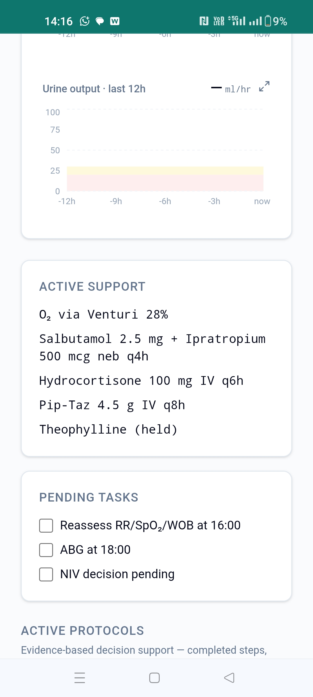
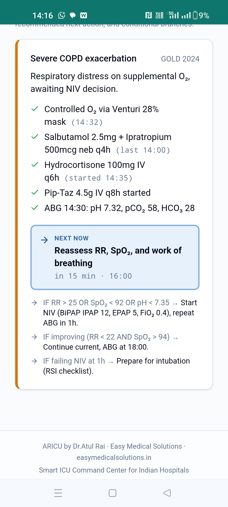
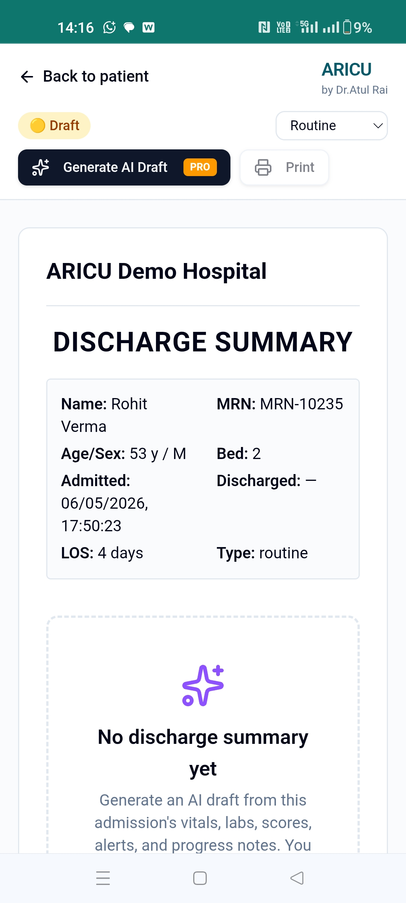
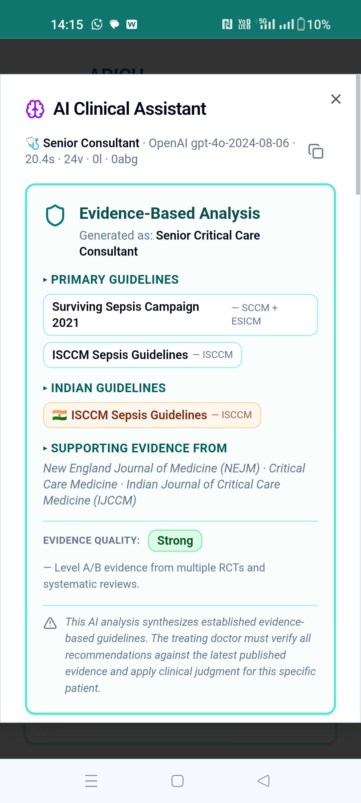

A senior consultant on every patient. 21-section clinical analysis. Follow-up chat with the AI. Real-time monitoring. Evidence-based throughout.
Built by Dr. Atul Rai, M.D. — Emergency Medicine & Critical Care, 23 years experience. Software that thinks alongside ICU teams.
Most EMRs were built for billing, not for clinical care. ICU teams burn time on documentation, miss subtle deteriorations, and write discharge summaries at midnight. ARICU was built to fix exactly this.
"We spend more time documenting than treating. By the time I write the discharge summary, I've forgotten half the patient's course."
— ICU Senior Resident
"Our nurses miss early sepsis signs because they're busy charting. By the time anyone notices, we're playing catch-up."
— ICU Consultant
"NABH inspectors want every interaction logged. Our current system makes audit reports nearly impossible without printing reams of paper."
— Hospital Quality Officer
A complete suite of AI modes built specifically for ICU workflow. Every recommendation grounded in evidence-based guidelines. Doctors verify, AI accelerates.
Comprehensive 21-section analysis of every patient. The AI automatically assumes the right specialist role — Toxicologist for poisoning, Cardiologist for MI, Pulmonologist for respiratory failure — and delivers consultant-grade reasoning.
9 CREDITS · WITH VISIONAfter the Senior Consultant analysis, ask follow-up questions. The AI remembers the full patient context and your previous analysis — like having a senior consultant on speed-dial. Get clinical clarity in seconds, not hours.
3 CREDITS PER MESSAGEStrictly data-grounded analysis: identifies active clinical problems with citations + action plan for each.
1 CREDITRanked differentials with supporting/against evidence. Suggested initial vs advanced workup.
2 CREDITSPersonalized treatment for confirmed diagnosis. Renal-adjusted doses. Allergy-aware. Indian guideline-compliant.
2 CREDITSAuto-drafts today's SOAP note from the day's clinical data. Doctor reviews and finalizes in seconds.
1 CREDITComprehensive admission write-up — chief complaint, HPI, ROS, exam, assessment, plan — all auto-drafted.
2 CREDITSEmpathetic family/patient explanation in simple Indian English. Diet, lifestyle, warning signs included.
1 CREDITAuto-drafts the entire discharge summary from admission course. Saves 30+ minutes per discharge.
2 CREDITSEvery AI recommendation cites the exact guidelines it's grounded in. No black box. No hallucinated findings. Doctors see precisely which evidence informs each suggestion — and verify it themselves.
ARICU's AI doesn't generate generic medical advice. Every response is anchored in established Indian and international guidelines, with citations shown openly to the doctor.
When you generate a treatment plan for sepsis, you see exactly which Surviving Sepsis Campaign 2021 + ISCCM 2022 + ICMR antimicrobial guidelines inform the recommendation. When you get a differential diagnosis, every alternative cites supporting evidence from the patient's actual data.
Generated as: Senior Critical Care Consultant
⚠ AI synthesis of established guidelines. Treating doctor must verify with current evidence and clinical judgment.
A 3-minute walkthrough showing how an ICU shift changes when your software watches the patient with you.
Real ICU workflow · Real AI suggestions · Real clinical scenarios
Click to watch on Loom

All ICU patients with vitals and NEWS scores

9 modes including Senior Consultant + Chat

Comprehensive AI consultant reasoning

Live CPR cycles, drugs, rhythm tracking

Vitals trends, treatments, pending tasks

GOLD 2024-based decision branches

Auto-drafted from clinical data

Real guidelines cited on every AI output
Dr. Atul Rai, M.D. (Physician) · Emergency Medicine + Critical Care
I've spent 23 years in Indian ICUs. I've watched brilliant teams burn out documenting instead of treating. I've seen junior doctors miss subtle deteriorations they would have caught with a senior over their shoulder. I've written discharge summaries at 2 AM, forgotten half the case.
ARICU is the software I wished I had during every shift. A senior consultant in the room. A discharge summary that writes itself. An audit trail NABH inspectors actually love. Built by someone who has been at the bedside — not by software people guessing at clinical workflow.
ARICU is launching with 5 founding pilot hospitals. Active conversations are underway with consultants and hospitals across India. Be among the first to define how AI-assisted critical care should work.
You're not buying software — you're shaping it. Founding partners get direct line to me (Dr. Atul Rai), influence on the roadmap, lifetime pricing protection, and the kind of personal attention only the first cohort gets.
Once the 5 founding slots are taken, the program closes. Future hospitals join at standard pricing.
Live tracker of pilot hospital onboarding progress:
Status updated weekly. Last update: May 2026.
Every plan includes a monthly credit allowance. Top-up packs available when you need more. Prepaid model — no surprise bills, no overage shocks.
Different AI modes use different credits based on complexity. Track usage in real-time. Top-up via Razorpay anytime, or enable auto-recharge to never run out during critical care.
Monthly credit allowance by plan
Top-up packs: 200 credits ₹500 · 500 credits ₹1,000 · 1,800 credits ₹3,000 (save 20%)
Be among the first 5 hospitals shaping the future of Indian ICU care. Founding-partner pricing forever.
⭐ Only 2 of 5 founding slots remaining
💬 Apply on WhatsApp 📧 Apply via EmailNo credit card required · Direct onboarding from founder
3 months free. Lifetime 30% off. Personal onboarding from the founder. Only 2 founding slots remaining.